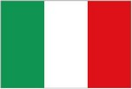

Italy
|  |
 Issue date: 2001 A stamp celebrating Ferrari's success in the 2000 F1 season. Michael Schumacher became Ferrari's first World Drivers Champion for 21 years. Schumacher clinched the drivers' title at the penultimate race of the season, the Japanese Grand Prix. Ferrari also successfully defended their constructors' title. The season was marred by one death: a race marshal was killed at the 2000 Italian Grand Prix at Monza. The two Jordans collided on the approach to the Variante della Roggia chicane and slid into the cars ahead of them. The marshal was struck by a loose tyre from one of the Jordans. Michael Schumacher considered quitting the sport as this was the first death in F1 since driver Ayrton Senna's in 1994. Issue date: 1988 A mini sheet of four values commemorating Enzo Ferrari (18th February 1898 to 14th August 1988). Ferrari has participated in the F1 World Championship since its introduction in 1950 but the first victory was not until the British Grand Prix of 1951. The first championship came in 1952-53, when the Formula One season was raced with Formula Two cars. In 1923, racing in Ravenna for Alfa Romeo, he acquired the Prancing Horse badge which decorated the fuselage of Francesco Baracca's (Italy's leading ace of WWI) SPAD S.XIII fighter, given from his mother, taken from the wreckage of the plane after his mysterious death. This icon would have to wait until 1932 to be displayed on a racing car. As Ferry Porsche stated in his autobiography "Mein Leben", the Prancing Horse is, in fact, the coat of arms of the city of Stuttgart. It is not from a German plane Baracca shot down - it was emblazoned on his aircraft in tribute to his past cavalry unit, and later presented to Ferrari by Baracca's family. Issue date: 2nd October 2005 A single stamp issue commemorating the 50th anniversary of the death of Alberto Ascari. Ascari drove for Ferrari from 1950 to 1953, in 1954 he drove for Maserati, Ferrari and Lancia and in 1955 he drove for Lancia. Ascari was killed at Monza whilst testing a Ferrari sports car in 1955. Ascari won the world championship in 1952 and 1953, driving the Ferrari 375 and 500.  Issue date: 2009 A single stamp commemorating Michele Alboreto, who was an Italian F1 driver; racing in F1 from 1981 to 1994. He drove for a variety of teams - Tyrrell, Ferrari, Arrows, Footwork, Lola and Minardi. His best result was in 1985, when driving for Ferrari (156/85) he was runner up in the driver's championship.  Issue date: 1998 A single stamp featuring the Ferrari 500 F2. In 1952 the World Championship of Drivers was run under Formula 2 regulations, this was as a result of Alfa Romeo withdrawing from the sport. Ferrari was the only team to have a car designed for these regulations, the 500 F2. As a result Alberto Ascari dominated the championship in this car. Issue date: 1998 A single stamp commemorating the 10th anniversary of Enzo Ferrari's death. Issue date: 11th September 1977 A mini sheet of stamps issued to coincide with the 48th Italian Grand Prix, which was held at Monza on 11th September 1977. In the race, Niki Lauda finished 2nd in the Ferrari behind Mario Andretti in the Lotus, but that was enough for Ferrari to win the constructors' title. The sheet itself features Alfa Romeo's two greatest drivers - Juan Manuel Fangio and Guiseppe Farina.  Issue date: 2008 A postcard commemorating the 60th Anniversary of the Death of Achille Varzi. Achille Varzi was a Grand Prix driver in the 1930s and 1940s and so was not an F1 driver. His legacy to the sport, however, was the introduction of the mandatory wearing of crash helmets. At the 1948 Swiss Grand Prix as light rain fell on the Bremgarten track, his Alfa Romeo 158 skidded on the wet surface, flipping over and crushing him to death. This resulted in the FIA mandating the use of crash helmets, which up until that point had been optional.  Issue date: 2004 A single stamp featuring Achille Varzi. Achille Varzi was a Grand Prix driver in the 1930s and 1940s and so was not an F1 driver. His legacy to the sport, however, was the introduction of the mandatory wearing of crash helmets. At the 1948 Swiss Grand Prix as light rain fell on the Bremgarten track, his Alfa Romeo 158 skidded on the wet surface, flipping over and crushing him to death. This resulted in the FIA mandating the use of crash helmets, which up until that point had been optional. |